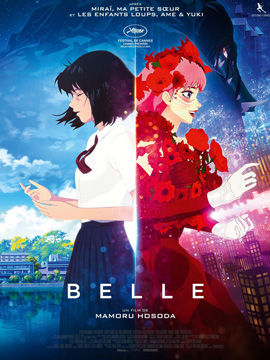
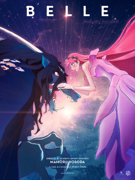
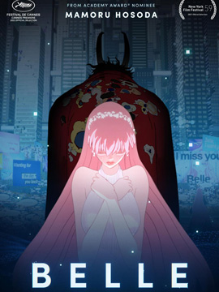

본문콘텐츠영역
-
  
About
A high school student becomes a globally beloved singer after entering a fantastic virtual world. She soon embarks on an emotional and epic quest to uncover the identity of a mysterious beast who's on the run from ruthless vigilantes.
MORE -
The director requested a geographic space when producing backgrounds in U, which expresses a vast space. Background Lead Tsubasa Harikae and Mr. Shimozawa describe their production process from conceptual production to actual production of U.
It was hoped that the sense of confusion would be reflected in U's space. He consciously tried to give space an abstraction that could be interpreted differently depending on the viewer, not just disorderly.
Character
Kim Sang-jin, who has been in charge of designing leading characters at Disney, was in charge of drafting Bell's design. Bell's costume was handled by a designer named Daisuke Iga. Another main character, the dragon, was designed by Kageichi Akiya.
-

- SUZU
- An introverted and insecure high school girl who was born and raised in the countryside of Kochi, where nature is abundant. I loved singing, but after I lost my mother in an accident when I was young, I couldn't sing in front of people.
-
- Dragon (Kei)
- The existence of a ferocious mystery in the form of a dragon loathed by many in the world of U. Nationality, age, gender, and all other information were not revealed.
-

- Hiroka
- A close friend of Suzu and a good understanding. Skillfully dealing with the Internet, luring Suzu into the world of U and producing it as a bell. The only key figure who knows who Bell is.
-
- Shinjiro
- An avid man who starts a canoe club by himself and aims for interhigh. The warmth makes him a little out of place around.
-

- Shinobu
- This is Suzie's childhood friend. He is the ace of the basketball team and is popular with women for his cool atmosphere. I worry about Suzu in many ways.
-
- Ruka
- She looks like a model who plays alto saxophone in the music club. She is like the bright sun that everyone in the school likes.
-

- Justin
- Justin is the leader of Justice, a group of legions declaring themselves unofficial guardians of justice and order within a virtual online space called U, and a major opponent of Suzu.
-

- Angel(tomo)
- Angel to be Bell's first fan and friend in the world of U. Trying to help dragons and bells. His identity is the younger brother of the dragon (Kei).
Trailers & Clips
-
 BELLE (2021) - Official Main Trailer
BELLE (2021) - Official Main Trailer -
 BELLE (2021) - Second Trailer vol.2 [HQ]
BELLE (2021) - Second Trailer vol.2 [HQ]